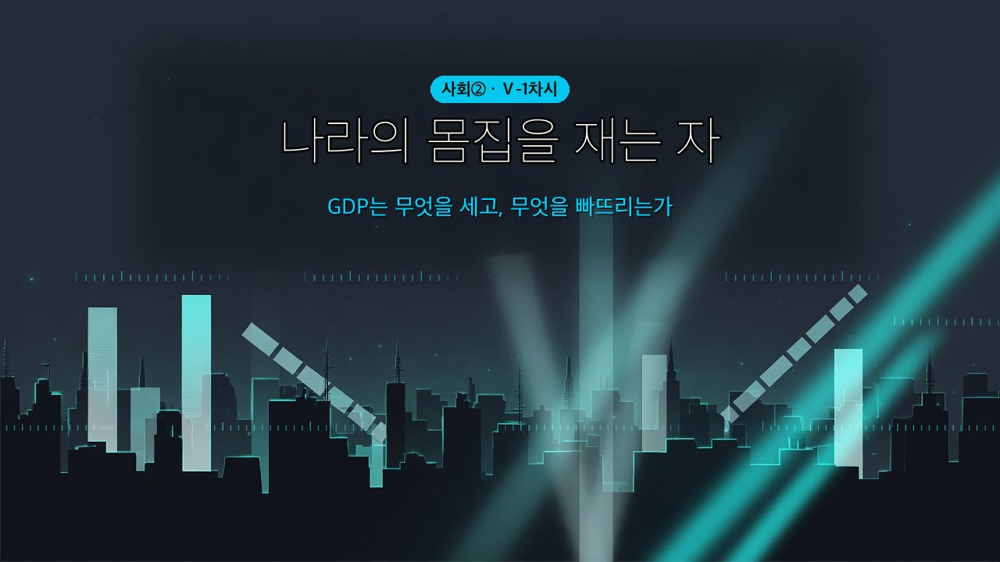

엄마가 해준 밥은 0원, 배달 떡볶이는 15,000원?

🎙️ 뉴스에서 "우리나라 경제 규모 세계 몇 위" 하는 말, 들어봤지? 그거 누가 어떻게 잰 걸까. 나라는 자로 잴 수 있는 물건이 아니잖아. 그런데 경제학자들은 진짜로 나라의 몸집을 재는 자를 만들었어. 이름이 GDP야. 오늘 그 자를 직접 손에 쥐어 볼 건데 — 재다 보면 좀 이상한 걸 발견하게 될 거야. 엄마가 해준 밥은 0원으로 잡힌다는 것.
- 국내 총생산의 의미와 측정 방법을 설명할 수 있다.
- 국내 총생산의 증가가 우리 생활에 미치는 영향과 그 한계를 말할 수 있다.
| 낱말 | 쉽게 말하면 | 한자 뜯어보기 | 문장 속에서 |
| 총생산(總生産) | 다 합쳐서 만들어 낸 것 | 총(總, 모두) + 생산(生産, 만듦) | "한 해 동안의 총생산을 더한다." |
| 최종 생산물 | 더 가공하지 않고 바로 쓰는 물건 | 최종(最終, 맨 끝) + 생산물 | "스마트폰은 최종 생산물이다." |
| 경기(景氣) | 경제 전체가 잘 돌아가는 정도 | 경(景, 형편) + 기(氣, 기운) | "요즘 경기가 나빠졌다." |
| 분배(分配) | 만들어 낸 것을 나누는 것 | 분(分, 나눌) + 배(配, 몫) | "성장해도 분배가 나쁘면 갈등이 생긴다." |
💡 오늘 딱 두 개만 잡자 — 최종 생산물(무엇을 세나)과 분배(왜 GDP만으론 부족한가).
A국은 자동차를 200만 대, B국은 100만 대 만든다. 자동차만 만드는 나라라면 A국의 경제 규모가 더 크다고 할 수 있다. 그런데 진짜 나라는 자동차도 만들고, 옷도 만들고, 미용실 서비스도 판다. 자동차 1대와 옷 1벌은 그냥 더할 수가 없다. 그래서 모든 생산물을 ①으로 바꿔 계산한 다음 더한다.
이렇게 한 국가의 국경 안에서 1년 동안 생산된 최종 생산물의 가치를 시장 가격으로 계산하여 모두 더한 것을 ②(GDP)이라고 한다. 여기에는 눈에 보이는 재화뿐 아니라 미용·배달 같은 ③도 함께 들어간다.
(교과서 원문: "한 국가의 국경 안에서 1년 동안 생산된 최종 생산물의 가치를 시장 가격으로 계산하여 모두 더한 것이 국내 총생산(GDP)이다. 최종 생산물에는 재화와 서비스가 모두 포함된다." — 천재교육 사회②(구정화) 92쪽)
💡 왜 하필 '시장 가격'일까? 자동차 1대 + 옷 1벌 = 2? 말이 안 되지. 단위가 다르니까. 그런데 가격으로 바꾸면 3,000만 원 + 5만 원 = 3,005만 원, 더할 수 있게 돼. 값을 매기는 건 비교하기 위해서야.
GDP의 정의는 한 문장이지만, 그 안에 조건이 네 개 숨어 있다. 네 개를 다 통과해야 GDP에 들어간다.
| 문 | 조건 | 통과 ✅ | 탈락 ❌ |
| 1 | 한 국가의 ④ 안에서 | 외국 기업이 우리나라 공장에서 만든 자동차 | 우리 기업이 베트남 공장에서 만든 옷 |
| 2 | ⑤ 동안 새로 생산된 것 | 올해 새로 만든 새 옷 | 작년에 만든 옷을 올해 중고로 판 것 |
| 3 | ⑥의 가치만 | 스마트폰 한 대 값 | 그 안에 든 반도체·배터리 값 |
| 4 | ⑦에서 거래된 것만 | 배달앱으로 시킨 떡볶이 | 엄마가 집에서 해 준 떡볶이 |
(교과서 원문: "생산자의 국적에 상관없이 우리나라 국경 안에서 생산한 것이면 우리나라 국내 총생산에 포함한다." / "1년 동안 새로 생산한 것만 포함한다. 작년에 생산한 재고품이나 중고품을 올해 거래하더라도 올해의 국내 총생산에 포함하지 않는다." / "재료나 부품은 제외하고 최종 생산물만 포함해야 한다." / "시장에서 거래되는 것만 포함한다. 집에서 직접 길러 먹는 채소나 집에서 하는 요리는 시장에서 거래되지 않기 때문에 국내 총생산에 포함하지 않는다." — 천재교육 사회②(구정화) 93쪽)
⚠️ 오해 주의 — 3번 문: 부품을 빼는 건 부품 만든 일이 하찮아서가 아니야. 스마트폰 값 안에 이미 반도체 값이 들어 있어서, 또 더하면 같은 걸 두 번 세게 되거든. 이걸 이중 계산이라고 해. 빼는 게 아니라 겹치지 않게 하는 거야.
2015년 중국의 GDP는 약 10조 8,660억 달러, 우리나라는 약 1조 3,780억 달러였다. 중국이 우리보다 여덟 배쯤 크다. 그럼 중국 사람이 우리보다 여덟 배 잘살까? 그렇지 않다. 인구가 많으면 GDP도 커지는 경향이 있기 때문이다.
그래서 국민 한 사람의 평균적인 소득 수준을 보려면, GDP를 ⑧로 나눈 ⑨을 봐야 한다.
(교과서 원문: "인구가 많은 국가는 국내 총생산도 커지는 경향이 있다. 그러므로 국민의 평균적인 소득 수준을 알기 위해서는 1인당 국내 총생산을 구해야 한다. 예를 들어 중국의 국내 총생산은 우리나라보다 훨씬 크지만, 1인당 국내 총생산은 우리나라가 훨씬 크다." — 천재교육 사회②(구정화) 92쪽)
🎙️ 이거 딱 우리 반 이야기 같지 않아? 반 전체 성적 합계가 높은 반이 꼭 잘하는 반은 아니잖아. 인원이 많으면 합계도 커지니까. 그래서 평균을 보는 거지. GDP와 1인당 GDP의 관계가 정확히 그거야.
비슷해 보이는 두 말이 있다. 국내 총생산과 국민 총생산.
우리나라 국경 안에서 만들었다면 만든 사람이 외국인이어도 우리나라 ⑩에 들어간다. 반대로 우리나라 사람이 외국에서 만든 것은 우리나라 ⑪(GNP)에는 들어가지만, 국내 총생산에는 들어가지 않는다.
(교과서 원문: "국내 총생산(GDP)은 우리나라 국경 안에서 우리나라 사람과 외국인이 생산한 최종 생산물의 가치를 모두 더한 것이에요. 이와 달리 국민 총생산(GNP)은 우리나라 사람이 국내와 외국에서 생산한 최종 생산물의 가치를 모두 더한 것이죠." — 천재교육 사회②(구정화) 92쪽)
💡 한 글자만 보면 돼: 국내의 '내(內)'는 안쪽, 곧 장소. 국민의 '민(民)'은 사람. 어디서 만들었나를 따지면 국내 총생산, 누가 만들었나를 따지면 국민 총생산이야.
GDP가 늘어나면 ⑫이 이루어진다. 경제가 성장하면 국민이 소비할 수 있는 재화와 서비스의 양이 늘고, 일자리가 많아지며, 생산에 참여한 사람의 소득도 늘어난다. 더 나은 교육·의료·복지·문화생활을 누리고 평균 수명과 여가도 늘어난다.
그런데 경제는 늘 같은 속도로 자라지 않는다. 활발할 때도 있고 위축될 때도 있다. 이 경제 전체의 활동 수준을 ⑬라고 한다.
경제가 성장하려면 기업이 공장 설비를 늘리는 ⑭를 해야 하고, 그 돈을 대려면 가계의 ⑮이 필요하다. 근로자도 교육과 훈련으로 실력을 키워야 한다.
(교과서 원문: "국내 총생산이 증가하면 경제 성장이 이루어진다. … 이처럼 경제 성장은 행복한 삶을 실현하는 데 필요한 기본 여건을 마련하여 주므로 모든 사회의 중요한 과제이다." / "경기: 경제 전체의 활동 수준을 의미한다." / "기업이 투자에 필요한 돈을 쉽게 구하기 위해서는 가계의 저축이 필요하다." — 천재교육 사회②(구정화) 94~95쪽)
💡 돌고 도는 고리: 설비 투자 ↑ → 생산 능력 ↑ → 생산 ↑ → 경제 성장 → 소득 ↑ → 소비 ↑ → 다시 설비 투자 ↑. 한 바퀴가 다음 바퀴를 밀어 준다.
교과서는 이렇게 말한다. "일반적으로 국내 총생산이 클수록 선진국에 가깝고 생활 수준이 높지만, 국민의 삶의 질이나 행복도가 경제 성장 속도에 정확히 비례하여 높아지지는 않는다."
GDP가 틀렸다는 말이 아니다. 다만 이 자로는 안 재지는 것이 있다는 뜻이다. 교과서가 든 다섯 가지를 성격별로 묶으면 세 갈래다.
| 갈래 | 무엇이 문제인가 | 교과서의 예 |
| ① 안 세는 것 | 삶을 좋게 하는데 GDP엔 0원 | ⑯·봉사 활동 / 여가의 가치 |
| ② 거꾸로 세는 것 | 삶을 나쁘게 하는데 GDP는 오히려 증가 | ⑰ / 교통사고·질병(수리비·병원비) |
| ③ 못 보는 것 | 총량이라 나눠진 모양을 못 봄 | ⑱ 상태 — 빈부 격차 |
(교과서 원문: "집에서 기른 상추에 밥을 싸서 먹었고, 봉사 활동으로 보람을 느꼈지만, 국내 총생산은 증가하지 않아요." / "생산 활동이 활발해지면 국내 총생산은 증가하지만, 자원이 줄어들고 환경 오염이 발생해요." / "자동차 수리 업체와 병원의 수입이 늘어 국내 총생산은 증가하지만, 삶의 질은 떨어져요." / "가족과 휴식을 취하며 재충전의 시간을 가져 즐거웠는데, 국내 총생산에는 포함되지 않아요." / "국내 총생산이 증가하면 뭐해요? 빈부 격차가 커져 사회 갈등이 심해지고 있다고요." — 천재교육 사회②(구정화) 95쪽)
🎙️ 다섯 개를 그냥 외우면 시험장에서 뒤섞여. 세 갈래로 묶어. 안 세는 것 / 거꾸로 세는 것 / 못 보는 것. 그리고 ②번 갈래가 제일 얄궂지 — 교통사고가 나면 GDP가 올라간다니. 수리비랑 병원비가 잡히거든.
아래 각 사례가 올해 우리나라 GDP에 들어가는지(O) 안 들어가는지(X) 판정하고, 몇 번 문에서 걸렸는지 써 보자. (통과했으면 "통과")
| 사례 | O/X | 걸린 문 |
| 미국 회사가 우리나라 공장에서 만든 전기차 | ||
| 우리나라 기업이 베트남 공장에서 만든 운동화 | ||
| 작년에 산 교복을 올해 중고 거래로 판 것 | ||
| 내가 집에서 동생 머리를 잘라 준 것 | ||
| 미용실에서 머리를 자르고 낸 돈 | ||
| 라면에 들어간 밀가루 값 (라면 값과 따로) |
| 번호 | 문장 | O/X |
| 1 | 외국 기업이 우리나라에서 생산한 것은 우리나라 국내 총생산에 포함한다. | |
| 2 | 작년에 만든 중고품을 올해 사고팔면 올해 국내 총생산에 포함한다. | |
| 3 | 국내 총생산이 큰 나라는 반드시 1인당 국내 총생산도 크다. | |
| 4 | 집에서 하는 요리와 가사 노동은 국내 총생산에 포함되지 않는다. | |
| 5 | 경제 성장률은 물가 상승분을 걷어낸 실질 국내 총생산으로 계산한다. |
오늘 배운 걸 안 보고 세 줄로 적어 보자. 틀려도 괜찮아 — 떠올리려고 애쓰는 그 순간에 머리에 박히는 거야.
1.
2.
3.
GDP는 엄마의 미역국을 0원으로 센다. 하지만 그 미역국이 우리 삶을 좋게 만든 건 분명하지.
만약 네가 삶의 질을 더 잘 재는 새로운 지표를 만든다면, GDP에 더하고 싶은 것과 빼고 싶은 것을 각각 하나씩 고르고, 왜 그런지 이유를 써 보자.
🔗 단원 질문으로 돌아가기 — 오늘 배운 "GDP는 총량이라 나눠진 모양을 못 본다"(6단계 ③갈래)가 바로 단원 질문 ④ "방안을 아는데 왜 안 될까?" 의 답 한 조각이야. 단원 마지막 날 다시 만나자.